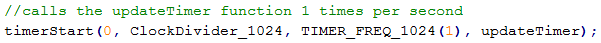

El joc és l'adaptació del clàssic “Simon says” a la consola Nintendo DS. No obstant, i per tal de dotar al projecte d'una mica de personalitat pròpia, canviarem el clàssic disc de quatre colors pel logotip del navegador Google Chrome, emprant els seus quatre colors com a tecles del disc.
Chrome says és un videojoc que correspon amb el projecte final de l’assignatura AEV (ETSINF - UPV).
Desenvolupat mitjançant la biblioteca vista a classe libnds i el llenguatge de programació C, el joc consisteix en tocar els botons il·luminats per la màquina en el mateix ordre, fins arribar a quinze seqüències, sense que s’acabe el temps. Tot tenint en compte que les possibles errades de repetiment per part de l’usuari descomptaran segons al compte enrere, reduint el temps per completar el joc.
Deixant de banda les mecàniques, el joc és una adaptació del clàssic “Simon says” a l’univers Google y a la videoconsola Nintendo DS. Aquesta memòria documentarà tot el procés de desenvolupament del videojocs des de les seues primeres fases.
Paraules clau: Nintendo DS, Chrome, Simon, videojoc, libnds.
El principal objectiu d’aquest projecte és ser capaços de desenvolupar un videojoc complet, partint de zero, per a la videoconsola Nintendo DS posant en pràctica tots els coneixements apresos al llarg de l’assignatura: tractament d’imatges, àudio, interacció entrada/sortida amb l’usuari, etc.
Altre objectiu és el contingut pedagògic d’aquesta pròpia memòria. Lluny de ser un tutorial, aquest document explica els passos seguits pels autors per tal d’assolir l’objectiu principal abans esmentat. Així, aquest document ajudarà a futurs alumnes que es troben els mateixos problemes que els autors a l’hora de desenvolupar el seu projecte de l’assignatura.
El nostre navegador s’ha tornat boig. En un acte d’extrema maldat , Google Chrome ha decidit enviar el nostre historial de navegació a la nostra mare. Per tal d’impedir-nos evitar-ho, ha bloquejat el nostre ordinador, si volem evitar la catàstrofe, tindrem que seguir el joc al malvat Chrome i seguir les combinacions de colors que ens diga. Per fer-ho encara més complicat, Chrome només ens dóna un minut per tal de fer les quinze combinacions que ens mostra. Si aconseguim fer-ho abans de que s’acabe el temps, esborrarem amb èxit el nostre historial i recuperarem el control del nostre ordinador. Però si no ho fem... ningú pot imaginar-se les conseqüències.
Només comence el joc es mostrarà el menú principal. L’única opció serà la de començar un nou joc, però mentre no se li’n done a la pantalla tàctil al botó o es prema el botó A, no s’iniciarà la partida. Es podrà sentir el tema principal del joc des de’l primer moment, sense necessitat d’haver iniciat la partida.
Una vegada iniciada, a la pantalla superior començarà el compte enrere, mentre que a la inferior començarà la primera seqüència de colors, il·luminant-se les tecles corresponent. Cada vegada que s’il·lumine una tecla del disc Chrome a la pantalla inferior, ja siga perquè l’usuari l’ha pressionat o la pròpia màquina ho ha fet, s’escoltarà un so corresponent al color en qüestió. Una vegada acabe la màquina, el jugador tindrà control per a poder repetir la seqüència. Si encerta, sumarà dos segons al compte enrere, i continuarà la màquina afegint una tecla més a la seqüència. Si falla, es restarà un segon al compte enrere, a més d’emetre’s un so característic que indica l’error. En cas de fallada de l’usuari, no s’afegirà una altra tecla a la seqüència fins que es faça bé.
Una vegada el jugador guanye, o perda, es donarà pas a la pantalla de victòria o de derrota, respectivament. L’única interacció possible serà donar-li al botó de la pantalla inferior, o prémer el botó A per tal de tornar al menú principal.
Obviant el desig de voler treure la millor nota possible a l’assignatura, hi ha altra motivació oculta, per part dels autors, que explica la tria d’aquest projecte. I aquesta és l’aspiració d’entrar a formar per de la indústria dels videojocs com a desenvolupadors dels mateixos.
És per tant, per tal d’assolir aquest objectiu, un requisit indispensable tenir una bona base amb els mateixos. Així com disposar d’alguns jocs fets prèviament per tal de fer-los servir com a carta de presentació i mostra de les aptituds personals dels autors a l’hora de fer la seua feina. És aquesta, per tant, la raó d’haver-nos matriculat d’aquesta assignatura i haver-hi seleccionat aquest projecte entre els proposats pel professor.
Anem a veure a continuació els coneixements previs indispensables per tal de poder desenvolupar aquest projecte:
Com podem veure, només hi ha dos requisits previs per tal de poder fer aquesta aplicació, ja que és un projecte molt simple no necessitem més, però també seria recomanable, per tal de fer més fàcil la nostra tasca i fer un joc de millor qualitat, tenir els següents coneixements:
El motiu d’aquests coneixements recomanables és per tal de poder editar i produir les nostres pròpies backgrounds, sprites, y textures. Així com els efectes de so i àudios. Tot açò es pot trobar per internet amb llicències obertes i sense restriccions, però amb açò perdrem la personalitat del projecte i dependrem de contingut de tercers. No obstant, es pot fer sense tenir aquestes nocions.
Per acabar aquest punt, llistarem a continuació el programari necessari per tal de desenvolupar el projecte i, entre parèntesi, el que nosaltres hem utilitzat. Òbviament no té per què emprar-se el mateix que nosaltres:
Notepad, GeditNo$GBA, DeSmuMEPer al desenvolupament de Chrome says hem seguit el cicle de desenvolupament del programari i les seues fases.
Com que ja hem explicat a la introducció com és una partida tipus, ja sabem quins són, doncs, els requisits. Així doncs, anem a llistar-los per tal de deixar-ho el més clar possible:
Una vegada tenim tots els requisits clars, cal que passem a analitzar com solucionar el nostre problema (requisits), això és, la fase de l’anàlisi.
L’anàlisi no és altra cosa que la solució als problemes plantejats als requisits. Així doncs, anem a veure quina va ser la nostra solució per a cadascun d’aquests problemes sense entrar en temes de programació, punt que veurem a la fase de codificació.
Tots els menús s’implementen amb el seu codi a part, cada menú tindrà la seua pròpia funció, llevat del de victòria i derrota que tindrà la mateixa i, depenent de l’argument d’entrada, es carregarà un o altre menú. Com que només cal carregar dues backgrounds i definir una interacció quan es prem el botó de la pantalla o la tecla A, és una funció molt simple.
El compte enrere s’implementarà mitjançant dues funcions: una que actualitze el temporitzador cada segon i vaja descomptant, i altra que, segons si l’usuari falla o encerta la combinació a repetir, sume o reste la quantitat corresponent al temporitzador (dos segons en cas d’encert i un en cas de fallada).
La intel·ligència artificial és un punt fàcil de resoldre. Una simple funció que traga valors aleatoris entre quatre possibilitats ens servirà per tal de saber quina tecla té que il·luminar-se. Guardarem aquesta combinació per tal se saber quina és la solució correcta que l’usuari té que repetir i així poder comprovar si ho ha fet bé o no.
Per a cada tecla o botó, en el cas de la interfície del menú, definirem unes regions a les quals detectarem si l’usuari ha polsat. Ja que tota interacció es farà mitjançant la pantalla inferior o tàctil. Amb aquestes regions de coordenades podrem saber quina tecla ha polsat l’usuari en cada moment, informació que enviarem a la funció d’il·luminació i a la de comprovació de solució.
La funció d’il·luminació i sons carregarà la background corresponent a la tecla il·luminada i reproduirà el seu so característic. Aquesta funció s’empra tant per la intel·ligència artificial com per la part de la interacció de l’usuari. D’aquesta manera ens estalviem el tenir que fer dues funcions separades per al mateix propòsit.
La creació de les diferents backgrounds i sprites que es gasten al joc s’han fet amb el programari lliure GIMP. Al subapartat de disseny veurem com les hem distribuït. De la mateixa manera, el so s’ha tret íntegrament de les pàgines indicades ala bibliografia sense que nosaltres el modifiquem de cap manera.
Tota la integració d’aquestes funcions es fa al mètode principal main del joc. Una vegada hem analitzat els problemes i pensat una solució, només cal fer el disseny i començar a codificar les funcions ací descrites.
Pel que fa al disseny d’interfícies, ho hem fet de la manera més simple que hem pogut. Reduint al mínim la sobrecàrrega d’informació, l’usuari sempre sabrà què fer i on polsar per tal de continuar amb la seua tasca. Els menús són simples i el joc també.
Centrem sempre la interacció en la pantalla tàctil, de manera que resulte més còmode per a l’usuari acostumar-se a que la pantalla superior tan sols és informativa. D’aquesta manera estarà centrat en la pantalla inferior per tal d’interaccionar i mirarà la superior per a consultar informació, com ara, el temporitzador per a saber quant de temps li queda.
La part de codificació consisteix, com ja hem dit, en passar a codi la part de l’anàlisi. Així doncs, passem a explicar breument, ja que junt amb la memòria s’entregarà el codi del projecte, les funcions que hem detallat a l’anàlisi de manera abstracta.
Menús: Els menús no són més que backgrounds que es carreguen i mostren en la consola. Les funcions dels menús es queden en un bucle del qual només es surt quan l’usuari prem el botó de la pantalla tàctil o la tecla A. Com ja hem explicat a l’anàlisi, per tal de detectar quan s’ha pressionat el botó de la pantalla tàctil, s’ha delimitat una superfície de coordenades a la pantalla. Quan l’usuari toca la pantalla dins d’eixa superfície, se sap que ha pres el botó.
Compte enrere: Per al compte enrere s’han fet les dues funcions abans dites. Ambdues gastes unes variables globals que indiquen els minuts i segons del temporitzador, i són eixes variables les que anem actualitzant. Per a anar reduint una vegada per segon el temps, es gasta un dels temporitzadors hardware dels que disposa la consola. A aquest temporitzador li indiquem que cride a la funció d’actualitzar, una vegada per segon. D’aquesta manera podem reduir el temps d’una manera simple.

Intel·ligència artificial: Per a la intel·ligència artificial hem tingut més problemes, ja que a C les funcions rand() generen números pseudoaleatoris, però sempre basades en una mateixa seed. Aleshores, mentre aquesta seed no es modifique, cada partida sortirien els mateixos números, i per tant, la mateixa combinació de tecles a polsar. La solució va ser declarar una variable qualsevol, traure la seua adreça virtual, la qual canviarà en cada execució del programa font, i, per tal de donar-li més aleatorietat, li sumem els segons actuals del compte enrere (el qual, òbviament, es modifica a cada segon que passa) i aquest valor serà la seed per a eixe valor aleatori. Per al següent, es tornarà a fer el procés per a canviar la seed i després es traurà el valor, de manera que cada valor està tret d’una llavor diferent.
Després, amb altra funció, canviem eixe sencer tret amb la funció anterior per un caràcter que ens indicarà quina tecla surt per a la combinació.
Interacció: La interacció és la part més simple, només tenim que veure qualsevol dels exemples que ens proporciona devKitPro per a veure que simplement hi ha que indicar una variable touchPosition que ens indicarà les coordenades a les que s’ha tocat la pantalla tàctil cada vegada que es faça. Amb això i les regions o superfícies delimitades per a cada tecla, sabrem si s’ha polsat dins d’una tecla o no i, en cas d’haver-ho fet, quina és.
Il·luminació i sons: Per a la il·luminació de les tecles, simplement hem fet una background per a cada possible tecla il·luminada. Aleshores, només ens cal una funció que, depenent de l’entrada, carregue un o altre fons. Tornant després al fons original, és a dir, sense cap tecla il·luminada. Amb aquesta mateixa entrada, podrem indicar de la mateixa forma quin so es té que reproduir. Llevat del tema principal que es comença a reproduir al començament de l’execució del programa, indistintament de la interacció de l’usuari.
Explicats aquests punts fonamentals, la resta del codi consisteix bàsicament en la integració de totes aquestes parts. Com s’adjunta el codi, es pot mirar qualsevol funció i consultar-la.
Malgrat ser l’última fase, a aquest projecte les proves s’han anat fent segons es desenvolupava la fase de codificació pas a pas, per tal d’anar veient que tot funcionava correctament. Les proves finals han sigut en ambdós emuladors per tal de veure que funcionava indistintament en un i altre.
Com a conclusions d’aquest treball podem treure la gran necessitat d’una millor documentació de libnds. Per als dubtes que han anat sortint al llarg del desenvolupament: cerca de funcions, macros, estructures... s’han tingut que consultar els exemples que vénen amb el devKitPro, ja que la documentació era confusa en ocasions.
Com a treball de l’assignatura és un projecte acceptable. A més a més, com que cada alumne pot triar quin fer o inclús proposar un, és molt versàtil. No obstant, s’hauria de donar més pràctica a classe. A les classes de teoria s’haurien de dur portàtils o fer-les al laboratori, el mestre hauria de anar guiant des del seu tota la sessió, mostrant com carregar imatges, sons, etc. Per tal d’ajudar l’aprenentatge dels alumnes.
També, i com a conclusió final, hem consolidat les fases de desenvolupament del programari, així com els coneixements adquirits a classe sobre l’arquitectura de la Nintendo DS. Sobre la qual, pensem, que seria necessari desenvolupar un framework per tal de fer més fàcil la tasca de programar sobre ella. Ja que no és difícil però es fa pesat i pot arribar a ser enutjós. Més encara quan no hi ha una bona documentació al darrere.
[1] Documentació de libnds. Disponible en: http://libnds.devkitpro.org/index.html
[2] How to make a bouncing ball game. Disponible en: http://ekid.nintendev.com/bouncy/
[3] Pràctiques de l’assginatura d’AEV, ETSINF-UPV.
[4] Dubtes de programació sobre C resolts als fòrums d’Stackoverflow. Disponible en: http://stackoverflow.com/
[1] Find Icons. Disponible en: http://findicons.com/
[2] Homes Kid. Disponible en: http://homes-kid.com/
[3] Free Sound. Disponible en: http://freesound.org/
[4] The ModArchive. Disponible en: http://modarchive.org/